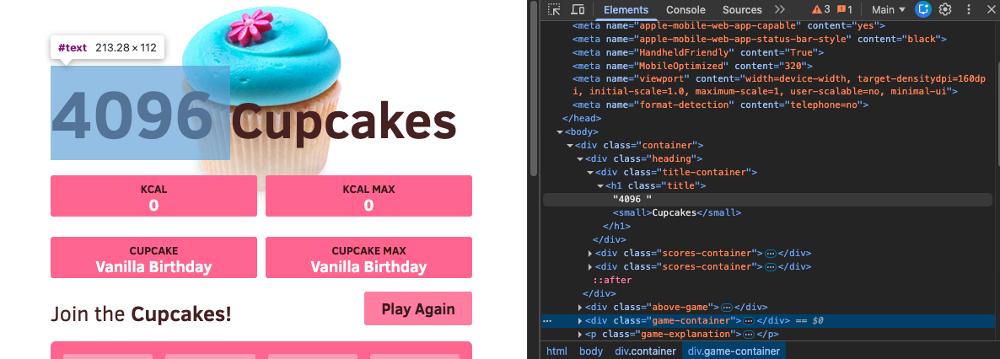
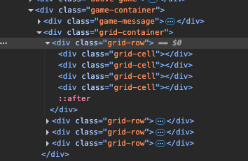
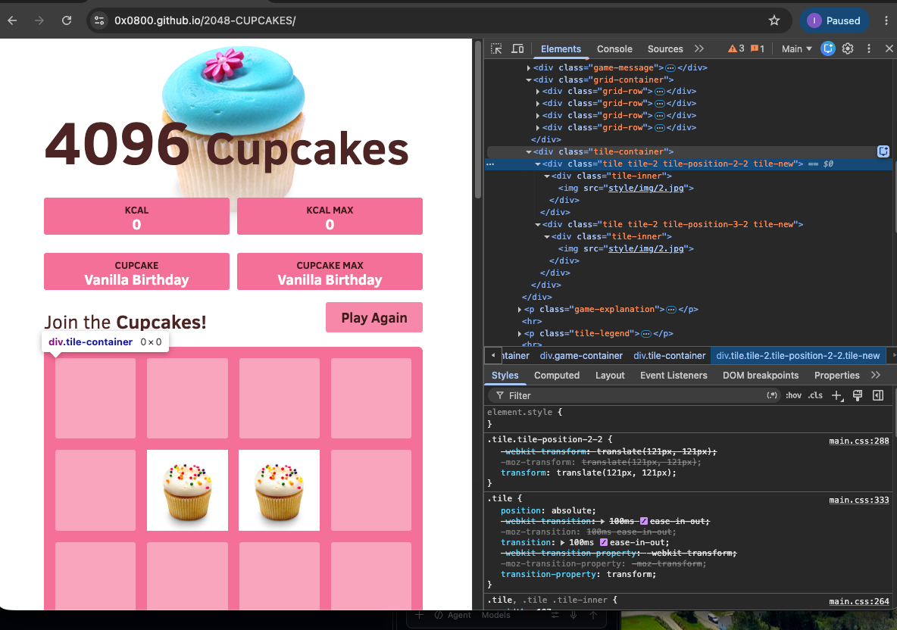
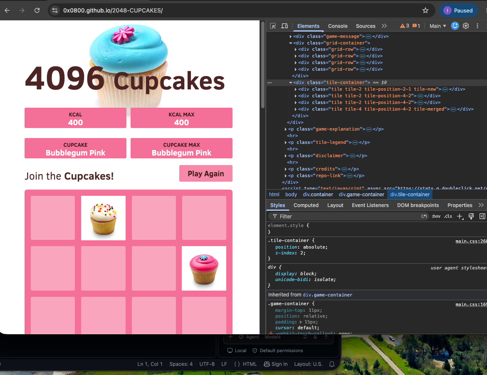
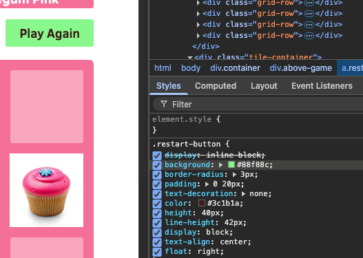
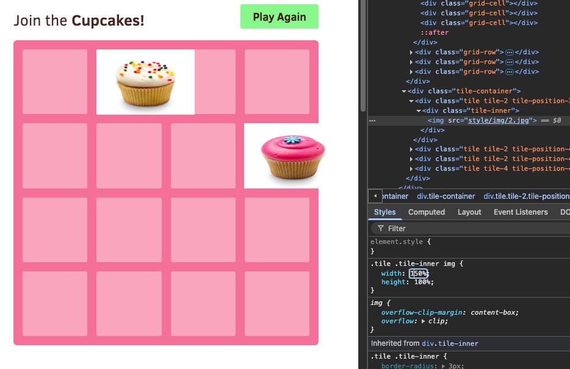
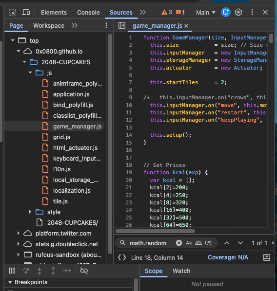
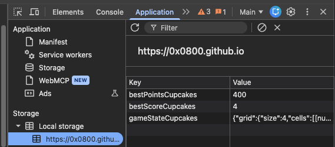

I chose 2048 Cupcakes to inspect because it's a simple game that I'm already familiar with. I also implemented 2048 on the command line a few years ago, so I was interested to see how the developers of this site chose to build the UI.
I started by looking through the Elements panel and quickly found the different containers for things like the game board, the scores, and the title. To make sure I understood how the HTML connected to the page, I changed the title from “2048” to “4096.” It updated immediately, which was also a fun way to test that I was editing the right element.

The visible game board is built from a .grid-container with four
.grid-row elements. Each row contains four .grid-cell
elements, creating the 16-cell board used by 2048.

Inside the .tile-container, you can see information about each
cupcake currently on the board. Each cupcake is given a position, such as
2-2 or 3-2.

When the user makes a move, those ositions change, and the number of cupcake elements can also change depending on whether new tiles appear or tiles combine.

I also used the Styles panel to look at the CSS being applied to different parts of the page. For example, I changed the background color of the Play Again button, and the change appeared immediately on the page. This made it easy to see how the HTML structure and CSS styling work separately.

I also changed the width of the cupcake images to 150%, which made all of the cupcakes look stretched out. This was another simple way to experiment with the Styles panel and see how changing one CSS property could affect the page.

Under the Sources tab, I looked through the js folder and found
the JavaScript files that control the actual game. In game_manager.js specifically,
you can see a lot of the main game logic, including how the board is updated and
how the game responds to moves.

Finally, under Application → Local Storage, I found that the game stores the highest cupcake value locally in the browser. Because this information is saved in Local Storage, it can still be there when you refresh the page or come back to the site later.
